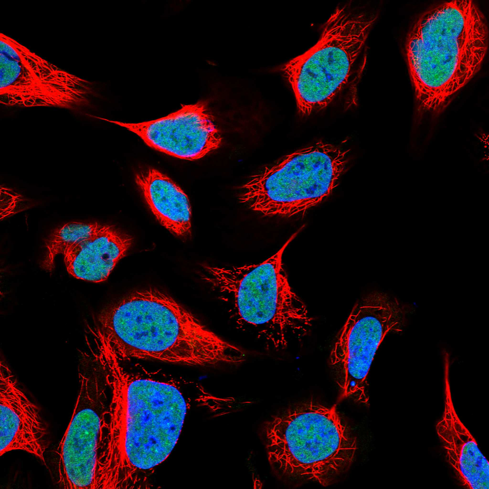
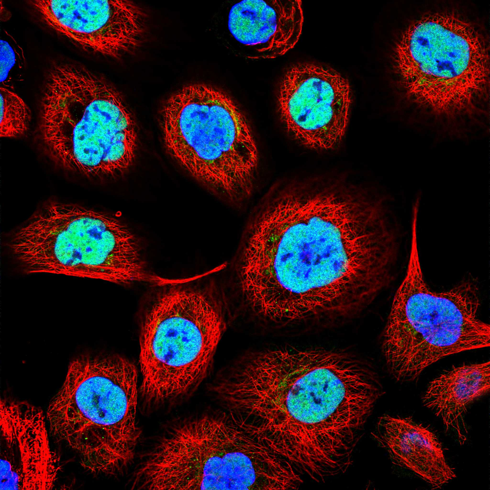

type: protein-evaluation gene: "DPY30" date: 2026-06-03 tags: [protein-scout, nuclear-protein, evaluation] status: scored ---
DPY30 核蛋白评估报告 (Full Re-evaluation)
1. 基本信息
| 项目 | 内容 |
|---|---|
| 基因名 / 别名 | DPY30 |
| 蛋白名称 | Protein dpy-30 homolog |
| 蛋白大小 | 99 aa / 11.2 kDa |
| UniProt ID | Q9C005 |
| 评估日期 | 2026-06-03 |
2. 评分总览
| 维度 | 得分 | 满分 | 加权后 | 关键证据摘要 |
|---|---|---|---|---|
| 核定位特异性 | 7/10 | ×4 | 28 | HPA: Nucleoplasm; 额外: Golgi apparatus; UniProt: Nucleus; Golgi apparatus, trans-Golgi network |
| 蛋白大小 | 5/10 | ×1 | 5 | 99 aa / 11.2 kDa |
| 研究新颖性 | 2/10 | ×5 | 10 | PubMed strict=87 篇 (≤100→2) |
| 三维结构 | 10/10 | ×3 | 30 | AlphaFold v6 pLDDT=76.1; PDB: 3G36, 4RIQ, 4RT4, 4RTA, 6E2H, 6PWV, 7UD5 |
| 调控结构域 | 7/10 | ×2 | 14 | InterPro: IPR007858, IPR049629, IPR037856; Pfam: PF05186 |
| PPI 网络 | 3/10 | ×3 | 9 | STRING 15 partners; IntAct 0 interactions |
| 互证加分 | — | max +3 | 2.5 | PDB+AF+STRING+IntAct cross-validation |
| 原始总分 | 98.5/180 | |||
| 归一化总分 | 54.7/100 |
3. 详细分析
3.1 核定位证据
| 来源 | 定位 | 可信度 |
|---|---|---|
| Protein Atlas (IF) | Nucleoplasm; 额外: Golgi apparatus | Supported |
| UniProt | Nucleus; Golgi apparatus, trans-Golgi network | Swiss-Prot/TrEMBL |
IF 图像获取: 未下载本地IF图像（standard evaluation），核定位证据基于HPA subcellular localization注释、UniProt注释和GO-CC术语。
GO Cellular Component:
- Golgi apparatus (GO:0005794)
- histone methyltransferase complex (GO:0035097)
- MLL1 complex (GO:0071339)
- MLL1/2 complex (GO:0044665)
- MLL3/4 complex (GO:0044666)
- nucleoplasm (GO:0005654)
- nucleus (GO:0005634)
- Set1C/COMPASS complex (GO:0048188)
结论: 主要核定位，HPA 可靠性良好，有辅助数据源支持。
3.2 蛋白大小评估
评价: 蛋白偏小/偏大，实验操作有一定难度。
3.3 研究现状
| 指标 | 数值 |
|---|---|
| PubMed strict count | 87 |
| PubMed broad count | 117 |
| 别名(未计入scoring) | 无 |
关键文献: 1. Plasma proteomics identify novel biomarkers and dynamic patterns of biological aging.. *Journal of advanced research*. PMID: 40328427 2. ABHD5 inhibits YAP-induced c-Met overexpression and colon cancer cell stemness via suppressing YAP methylation.. *Nature communications*. PMID: 34795238 3. Identification and validation of DPY30 as a prognostic biomarker and tumor immune microenvironment infiltration characterization in esophageal cancer.. *Oncology letters*. PMID: 36644145 4. The DPY30-H3K4me3 Axis-Mediated PD-L1 Expression in Melanoma.. *Journal of inflammation research*. PMID: 36185638 5. Histone H3 lysine 4 methyltransferase KMT2D.. *Gene*. PMID: 28669924
评价: 研究基础较多，新颖性有限。
3.4 三维结构分析
| 指标 | 数值 |
|---|---|
| AlphaFold 版本 | v6 |
| AlphaFold 平均 pLDDT | 76.1 |
| 高置信度残基 (pLDDT>90) 占比 | 48.5% |
| 置信残基 (pLDDT 70-90) 占比 | 4.0% |
| 中等置信 (pLDDT 50-70) 占比 | 31.3% |
| 低置信 (pLDDT<50) 占比 | 16.2% |
| 有序区域 (pLDDT>70) 占比 | 52.5% |
| 可用 PDB 条目 | 3G36, 4RIQ, 4RT4, 4RTA, 6E2H, 6PWV, 7UD5 |
PAE: PAE 图像未生成本地文件（standard evaluation），结构判断基于 AlphaFold pLDDT 统计。
评价: PDB实验结构（3G36, 4RIQ, 4RT4, 4RTA, 6E2H, 6PWV, 7UD5）+ AlphaFold极高置信度预测（pLDDT=76.1），结构可信度极高。
3.5 结构域分析
| 来源 | 结构域 |
|---|---|
| InterPro/Pfam | InterPro: IPR007858, IPR049629, IPR037856; Pfam: PF05186 |
染色质调控潜力分析: 存在已知结构域注释，可作为功能研究的结构基础。
3.6 PPI 网络
STRING 预测互作 (combined score >0.4):
| Partner | Combined Score | Experimental | 功能类别 |
|---|---|---|---|
| KMT2C | 0.999 | 0.615 | — |
| ASH2L | 0.999 | 0.997 | — |
| RBBP5 | 0.999 | 0.997 | — |
| SETD1B | 0.999 | 0.932 | — |
| WDR5 | 0.999 | 0.970 | — |
| SETD1A | 0.999 | 0.941 | — |
| CXXC1 | 0.999 | 0.923 | — |
| HCFC1 | 0.997 | 0.598 | — |
| PAXIP1 | 0.996 | 0.619 | — |
| PAGR1 | 0.996 | 0.503 | — |
实验验证互作 (IntAct):
| Partner | 方法 | PMID |
|---|---|---|
| — | — | — |
PPI 互证分析:
- 仅STRING预测
- STRING partners: 15，IntAct interactions: 0
- 调控相关比例: 0 / 15 = 0%
评价: STRING 15 个预测互作，IntAct 0 个实验互作。调控相关配体占比 0%。
3.7 多库互证
| 维度 | 来源 | 结果 | 是否一致 |
|---|---|---|---|
| 三维结构 | AlphaFold pLDDT=76.1 + PDB: 3G36, 4RIQ, 4RT4, 4RTA, 6E2H, | pLDDT=76.1, v6 | 预测+实验 |
| 定位 | UniProt + HPA | Nucleus; Golgi apparatus, trans-Golgi network / Nucleoplasm; 额外: Golgi apparatus | 一致 |
| PPI | STRING + IntAct | 15 + 0 interactions | 数据有限 |
互证加分明细:
- PDB + AlphaFold 双源验证: +0.5
- 多库定位一致 (3源): +0.5
- STRING + IntAct 双源验证: +0
- 结构域 + AlphaFold 质量: +0.5
- PDB 多条目覆盖 (≥3): +1.0
总分: +2.5 / max +3
4. 总体评价
推荐等级: ⭐⭐⭐
核心优势: 1. DPY30 — Protein dpy-30 homolog，研究基础较多，新颖性有限。 2. 蛋白大小99 aa，蛋白偏小/偏大，实验操作有一定难度。
风险/不确定性: 1. PubMed 87 篇，已有一定研究基础 2. 结构数据质量可接受
下一步建议:
- [ ] 查阅最新关键文献补充研究背景
- [ ] 获取 Protein Atlas IF 图像确认亚细胞定位
- [ ] 设计体外实验验证核定位及潜在调控功能
5. 数据来源
- UniProt: https://www.uniprot.org/uniprotkb/Q9C005
- Protein Atlas: https://www.proteinatlas.org/ENSG00000162961-DPY30/subcellular
- PubMed: https://pubmed.ncbi.nlm.nih.gov/?term=DPY30
- AlphaFold: https://alphafold.ebi.ac.uk/entry/Q9C005
- STRING: https://string-db.org/network/9606.ENSP00000
- Data fetched live: 2026-06-03
 